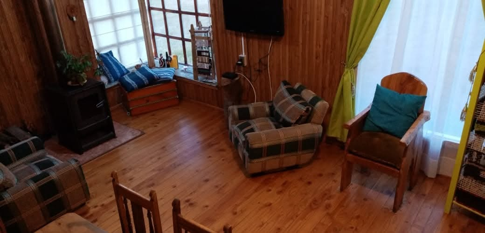
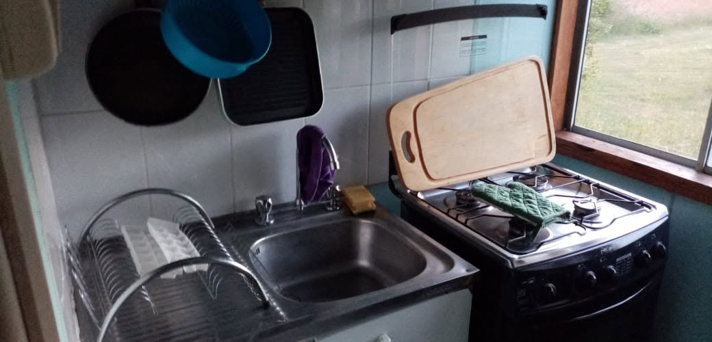
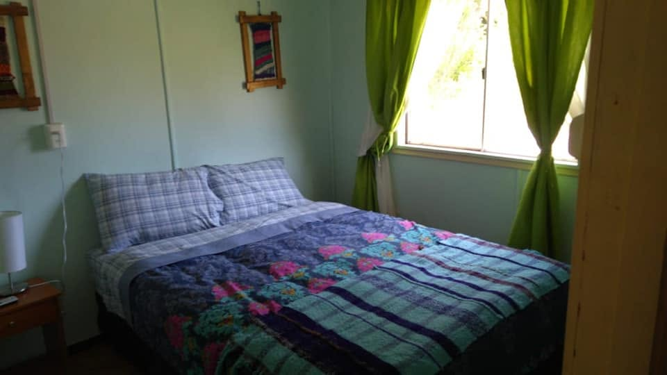
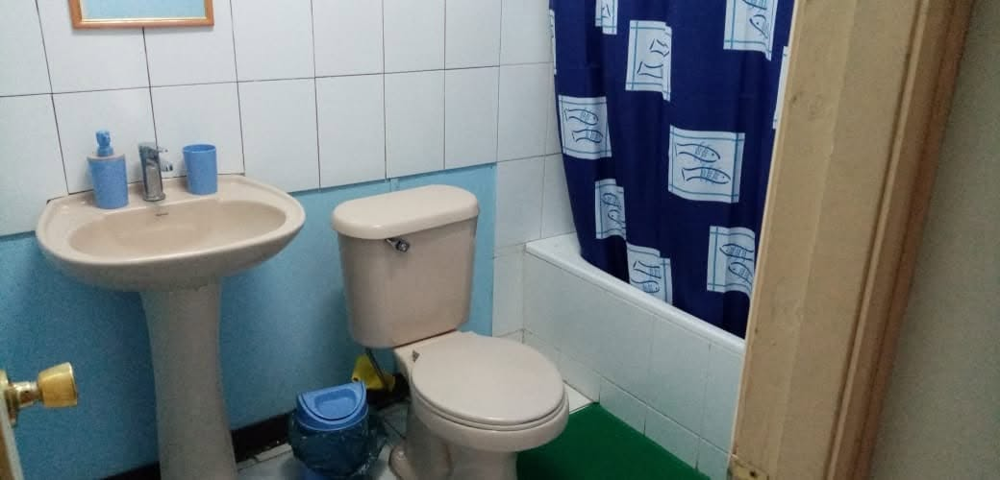
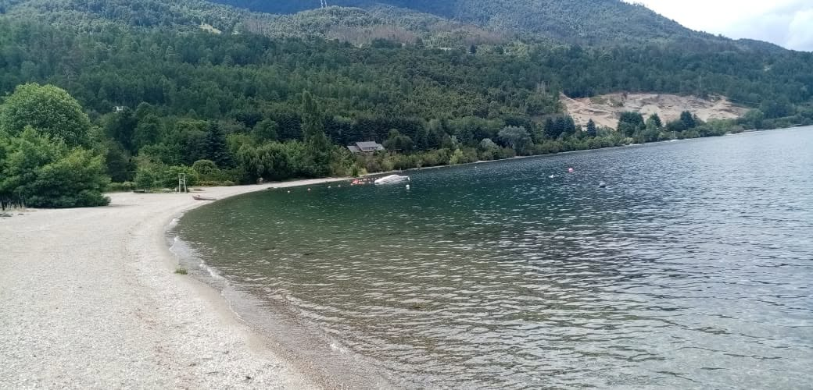
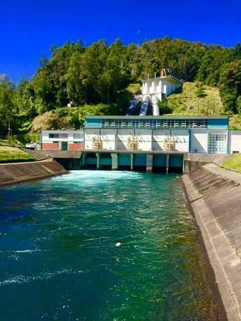

La cabaña
Espacio para describir la cabaña: cómo es, qué la hace especial y qué se puede hacer en los alrededores.
- Hasta 6 personasPensada para familias y grupos.
- Reserva en líneaVes los días disponibles y eliges tus fechas.
- Abono del 50%Por transferencia para confirmar; el resto lo pagas al llegar.
Galería






Cómo reservar
- Elige tus fechasCompleta tus datos y marca la llegada y la salida en el calendario. Las fechas quedan apartadas por 48 horas.
- Transfiere el abonoAl menos el 50% dentro de 48 horas, o el total si prefieres. El abono no es reembolsable.
- Te confirmamos por correoAl recibir tu transferencia confirmamos la reserva. El saldo lo pagas al llegar.
Ubicación
Tralcapulli, km 2 · Panguipulli, Región de Los Ríos. Abrir en Google Maps
¿Listo para venir?
Revisa los días disponibles y envía tu solicitud en un par de minutos.
Reserva aquí